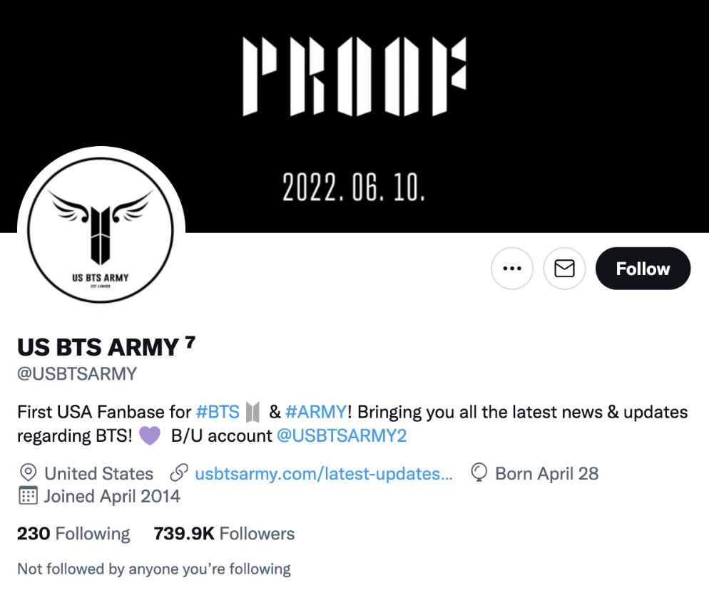
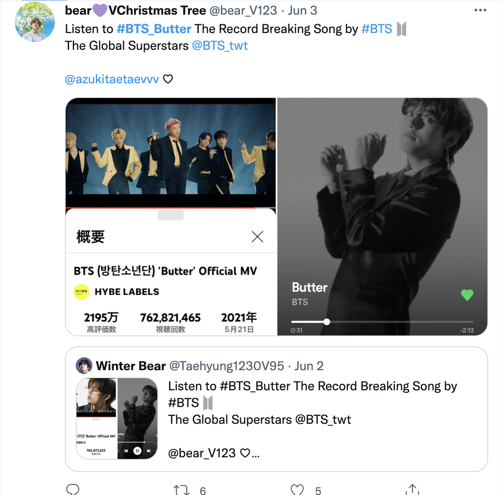
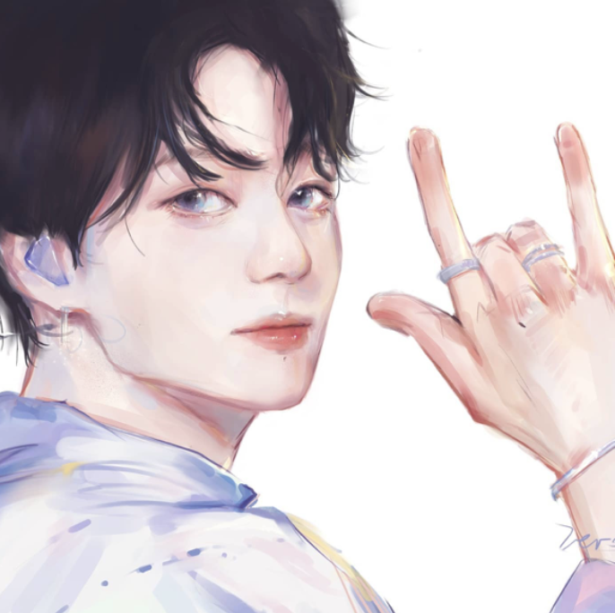
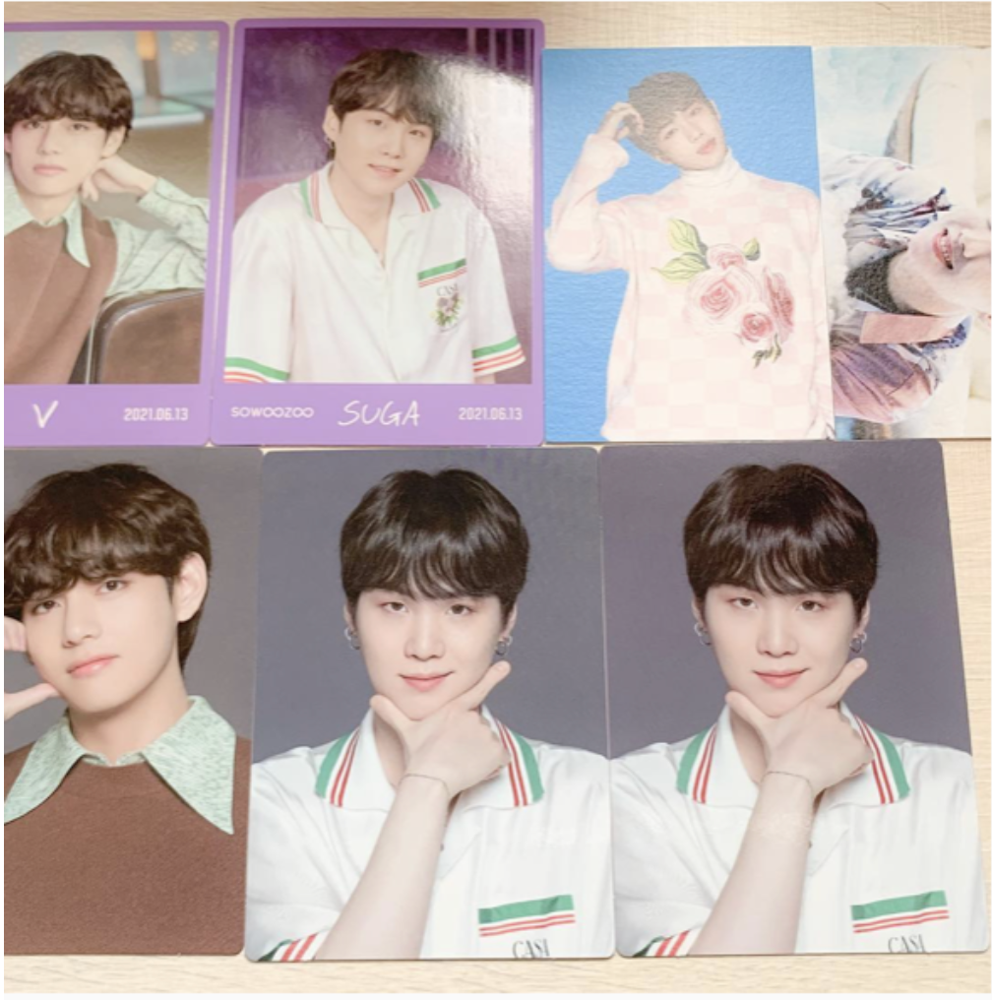

Twitter is the latest platform in which ARMYs show their love and support - in the form of a large number of tweets with different BTS related hashtags.
As of June 2022, BTS US ARMY fan account has 739.9k followers on Twitter and, when it comes to stimulating online traffic, BTS ARMYs from the west are quite well-known for their voting and trending dedication. Next to financial support, there are indeed also other ways to provide support online to shape BTS' success.
The ARMYs showed their love and support - in the form of 300 million tweets about the group's latest single "Butter."Twitter showed support for the campaign around BTS' "Butter," releasing exclusive emojis for the ARMY around the world to use together with their hashtags such as a "Butter" logo as well as the BTS and AMRY's yellow logo. Additionally, the social media platform surprised the fans by releasing two additional hashtags, #SmoothLikeButter, together with an image of melting butter that shows the lyrics, and the #Got_ARMY_Behind_US, to show love and support to the BTS fans.
Special giveaways, charity projects and donations, and fan held booths are representative forms of fan organized activities.
ARMYs from the west often dedicate themselves to creating astonishing BTS fanarts, from digital arts, to pencil line arts, to rubik's cubes, to Disney characters.
Some ARMYs have been huge fans of BTS since their debut, and they often like to post their album collections and merch on instagram, some of which are very rare, valuable, and hard-to-find. Such as their 2014 Summer Package. BTS is their ultimate group and many of them have an incredible collection!!